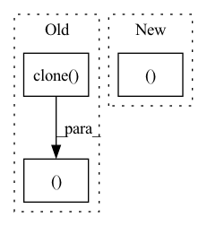

Pattern ID :1213
Before Change
m, x_rnn, _ = self.erb_stage(feat_erb)
spec = self.mask(spec, m, atten_lim) // [B, 1, T, F, 2]
lsnr, _ = self.lsnr_net(x_rnn)
out_specs = [spec.squeeze(1).clone() for _ in range(len(self.refinement_stages) + 1)]
// re/im into channel axis
spec_f = (
spec.squeeze(1)[:, :, : self.df_bins].permute(0, 3, 1, 2).clone()
) // [B, 2, T, F_df]
h_conv: Optional[Tensor] = None
for i, (stage, _) in enumerate(zip(self.refinement_stages, self.refinement_snr_max)):
refinement, h_conv, _ = stage(self.cplx_comp(spec_f), h_conv)
spec_f = spec_f + refinement
out_specs[i + 1][..., : self.df_bins, :] = spec_f.permute(0, 2, 3, 1)
spec[..., : self.df_bins, :] = spec_f.unsqueeze(-1).transpose(1, -1)
return spec, m, lsnr, out_specs
def init_model(df_state: Optional[DF] = None, run_df: bool = True, train_mask: bool = True):
assert run_df and train_maskAfter Change
r, _, _ = self.refinement_stage(self.cplx_comp(spec_f))
spec_f = self.refinement_op(spec_f, r)
spec[..., : self.df_bins, :] = spec_f.unsqueeze(-1).transpose(1, -1)
return spec, m, lsnr, None
def init_model(df_state: Optional[DF] = None, run_df: bool = True, train_mask: bool = True):
assert run_df and train_maskIn pattern: SUPERPATTERN
Frequency: 3
Non-data size: 3
Instances Fragment ID: 3666780
Project Name: rikorose/deepfilternet
Commit Name: 946b362aa406f8a1808a252393351d0e7523130a
Time: 2022-04-12
Author: h.schroeter@pm.me
File Name: DeepFilterNet/df/multistagenet.py
M Class Name: MSNet
N Class Name: MSNet
M Method Name: forward(3)
N Method Name: forward(3)
M Parent Class: nn.Module
N Parent Class: nn.Module
M File Name: DeepFilterNet/df/multistagenet.py
N File Name: DeepFilterNet/df/multistagenet.py
M Start Line: 534
M End Line: 547
N Start Line: 504
N End Line: 510
Before Change
cmem_k, cmem_v = map(merge_heads, (cmem_k, cmem_v))
old_mem_range = slice(- min(mem_len, self.mem_len) - self.seq_len, -self.seq_len)
old_mem_k, old_mem_v = k[:, :, old_mem_range].clone(), v[:, :, old_mem_range].clone()
q, old_mem_k, old_mem_v, cmem_k, cmem_v = map(lambda x: x.detach(), (q, old_mem_k, old_mem_v, cmem_k, cmem_v))
aux_loss = F.mse_loss(After Change
cmem_k, cmem_v = map(merge_heads, (cmem_k, cmem_v))
old_mem_range = slice(- min(mem_len, self.mem_len) - self.seq_len, -self.seq_len)
old_mem_k, old_mem_v = map(lambda x: x[:, :, old_mem_range].clone(), (k, v ))
q, old_mem_k, old_mem_v, cmem_k, cmem_v = map(lambda x: x.detach(), (q, old_mem_k, old_mem_v, cmem_k, cmem_v))
Fragment ID: 3666779
Project Name: lucidrains/compressive-transformer-pytorch
Commit Name: 725bf4f5f63cfe64082e3b7b34685f259410d0f1
Time: 2020-07-01
Author: lucidrains@gmail.com
File Name: compressive_transformer_pytorch/compressive_transformer_pytorch.py
M Class Name: SelfAttention
N Class Name: SelfAttention
M Method Name: forward(4)
N Method Name: forward(4)
M Parent Class: nn.Module
N Parent Class: nn.Module
M File Name: compressive_transformer_pytorch/compressive_transformer_pytorch.py
N File Name: compressive_transformer_pytorch/compressive_transformer_pytorch.py
M Start Line: 200
M End Line: 201
N Start Line: 201
N End Line: 201
Before Change
for encoder in self.encoders:
x = encoder(x, input_mask)
encoder_logit = x.clone()
for decoder in self.decoders:
// target, encoder_output, encoder_mask)
target = decoder(target, x, input_mask)
lm_logits = self.lm_head(x)
loss = None
if labels is not None:
// Shift so that tokens < n predict n
shift_logits = lm_logits[..., :-1, :].contiguous()
shift_labels = labels[..., 1:].contiguous()
// Flatten the tokens
loss_fct = CrossEntropyLoss()
loss = loss_fct(shift_logits.view(-1, shift_logits.size(-1)), shift_labels.view(-1))
return lm_logits, loss, encoder_logit, x
After Change
loss_fct = CrossEntropyLoss()
loss = loss_fct(shift_logits.view(-1, shift_logits.size(-1)), shift_labels.view(-1))
return lm_logits, loss
Fragment ID: 3666778
Project Name: nawnoes/pytorch-meena
Commit Name: d475c52c2ba0c43b75056e0f552fa7ce953b2fdd
Time: 2021-05-04
Author: nawnoes@gmail.com
File Name: model/meena.py
M Class Name: Meena
N Class Name: Meena
M Method Name: forward(4)
N Method Name: forward(4)
M Parent Class: nn.Module
N Parent Class: nn.Module
M File Name: model/meena.py
N File Name: model/meena.py
M Start Line: 55
M End Line: 75
N Start Line: 60
N End Line: 74